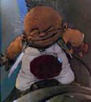
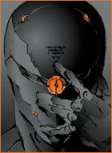

Forums galactiques > Assemblée Galactique : diplomatie officielle > Topic des présentations
| Grosalen Respect diplomatique : 165  09/12 ETU 13:06 | Score : -1 Détails Bienvenu Commandant !
Et bravo pour cette intervention de présentation à l'Assemblée ! | ||
| Aigle blanc Respect diplomatique : -203  09/12 ETU 13:28 | Score : -7 Détails Je suis Aigle blanc, pas celui de la galaxie 0 car j'attend dire qu'il est cruel ce n'est pas mon cas,
beaucoup d'entrevous me deteste car il me croit que je suis aigle blanc le cruel, et la ressemblance avec ce pseudo est une coincidence. | ||
| Thâois Respect diplomatique : 582  09/12 ETU 14:38 | Score : 0 Détails Le peuple Nain vous salue Noble Aigle Blanc et à voir votre score diplomatique sur l'écran géant de l'Assemblée, je reste couac. Cela est ma foi vrai que la ressemblance est frappante avec ce Cdt mais qui n'a pas un jumeau se cachant quelque part dans un coin de la Galaxie
Et je vois que les amalgames vont bon train dans la Galaxie, peu être devrions nous "purger" un peu tout ça... Thâois, maître Nain | ||
| uvdr Respect diplomatique : 9 09/12 ETU 15:27 | Score : 9 Détails hum, hum, test micro.....1, 2....1, 2.....mouais ça marche on dirait.
bien, salut à tous, je suis Uvdr du systéme 153 de la galaxie des exilés. vous qui vous apprétez à signer ce juteux contrat avec nous, sachez que la plus noble philosophie du commerce (la notre évident, issue des idées éclairées de notre plus grand penseur J'TEmBrouille II)doit permettre de rendre tous les peuples de cette vaste soupe stellaire égaux et libres.....bon en fait surtout le mien, mais j'ai toujours besoin de main d'oeuvre à exploiter, de clients à escroquer.......c'est curieux j'ai l'impression que mon traducteur universel ne marche pas très bien.......excusez moi j'ai un ou deux techniciens à licencier, j'en ai pour une minute.....prenez un café, abusez de l'hotesse.................... | ||
| Ostrogradski Respect diplomatique : 28  10/12 ETU 15:13 | Score : 2 Détails Un homme corpulent s'extripa peiniblement de son fauteil. Le viage renforgné, il s'achemina lentement vers le micro. Il sorti d'une des poches de sa veste un petit morceau de papier taché et sali. Le regard fixé sur ce papier, il lu, avec un fort accent:
"Je me nomme Ostrrogrradski, souverrain de Milmann et duc de Tchebitchev.Je viens ici pourr me fairre connaitrre auprrès de cette assemblée et exprrimer mes intentions pacifiques." Et, sans un regard vers l'auditoire, il regagna lentement sa place. | ||
| Tac Respect diplomatique : 39  10/12 ETU 16:31 | Score : -3 Détails Un écureuil s'avança.
<< Très cher Ostrogradski, votre nom ne m'est pas inconnu! J'utilise très régulièrement dans une vie très lointaine, un théorème que vous auriez écrit... Je vous souhaite d'être aussi brillant en tant que commandant que en tant que physicien! >> Tac se retira en pensant avoir encore parlé trop vite... | ||
| Namaj Vüenthal Respect diplomatique : -6  10/12 ETU 16:39 | Score : -6 Détails Je suis Namaj Vüenthal
Sérieux mais aime bien l'humour.$ n'aime pas l'e*u | ||
| Jabber wock Respect diplomatique : 4  11/12 ETU 11:59 | Score : 1 Détails Une personne se leva. Elle avait une longue crinière de cheveux mauve qui lui descendait jusqu?à la taille qui mettait ses yeux de la même couleur en valeur. Personne ne put dire si c?était un homme ou une femme. Elle avait en effet des pommettes saillantes et une fine ossature mise en valeur par une peau brillante. Sa morphologie n?aidait pas car elle était masquée par un lourd manteau noir rehaussé de blanc. Les plus observateur crurent tout de même percevoir d?étranges appendices dorsaux. Elle prit donc la parole avec une voix grave et majestueuse
« Honorable Assemblé, je me présente. Je suis Jabber wock de la planète Emeraude. » Elle s?interrompit pour scruter l?assemblé. « A voir vos regards nombreux sont ceux qui se demande mon genre, fit remarquer la créature. Je suis le témoignage d?une lointaine errance génétique, je suis l?être le plus complet de la création, je suis la créature la plus à même de comprendre toutes les autres car je suis Jabber wock l?androgyne. Je diffuserai jusqu?à mon dernier souffle un message universel de paix et de compréhension mutuelle. Je serais enchanter d?entreprendre un commerce actif avec mes voisins." | ||
| blastobi Respect diplomatique : 5 11/12 ETU 21:11 | Score : 2 Détails Décidé à représenter mon peuple comme il se doit, je pense qu'il est sage que je me présente à vous.
Je suis le commandant Blastobi, représentant des Laellyoriens. Pendant plusieurs dizaines d'années, pour de futiles raisons, les précédents politiques de Lallyo étaient désireux d'éviter un maximum toute communication avec l'extérieure. Mais maintenant que je suis nommé en tant que représentant de mon peuple, ceci est chose révolue et je compte bien tourner cette page de l'histoire Laellyorienne. Je n'ai pas encore eu le temps de saisir tout le contexte politique et militaire actuel et je suis navré d'arriver dans des temps si troublés. Je tiens quand même à prendre un peu de votre temps pour vous présenter mon peuple. Les Laellyoriens sont un peuple pacifique, comme beaucoup d'autres et j'en suis heureux, cela permet d'envisager des alliances constructives. Néanmoins, j'ai pu m'apercevoir que nombres de batailles sont encore à prévoir, particulièrement contre le Grand Pôpe, dont j'entends beaucoup parlé depuis mon arrivée. Au vu de ses agissements, vous pouvez compter sur Laellyo pour lutter contre lui. Commandant Blastobi | ||
| Nish Dwaal Respect diplomatique : 35  11/12 ETU 22:43 | Score : 3 Détails *Nish Dwaal s'avança alors et salua l'Assemblée d'un sobre geste amical. Il toussota légèrement pour se donner une contenance, sourit et se lança alors dans son discours de présentation sous le regard des commandants présents.*
"Bonjour à vous, membres de l'Assemblée. Je suis le Commerçant Nish Dwaal. Je suis implanté sur la belle planète Dwaaliana, renommée par mes soins à mon arrivée afin qu'elle possède enfin un nom digne de son apparence." *Il marqua une petite pause puis reprit.* "Je tenais à me présenter devant vous afin de vous assurer de mes intentions purement diplomatiques et commerciales. La guerre ne m'intéresse pas mais je reste naturellement à la disposition des plus guerriers d'entre vous afin d'établir d'éventuels contrats commerciaux concernant des appareils militaires. Tous les types de contrat peuvent attirer mon attention et je serais ravi d'établir des contacts avec des intéressés." *Il soupira doucement et, prenant l'expression d'un homme exténué, il ajouta.* "Membres de l'Assemblée, pardonnez la brieveté de ma première intervention parmi vous mais les affaires de ma planète m'attendent. Mon implantation est récente mais je reste naturellement à votre disposition à tout moment." *Il s'inclina légèrement et conclut, une petite lueur dans le regard.* "Que la paix et la prospérité vous sourient, membres de l'Assemblée." | ||
| gogolitos Respect diplomatique : -3 12/12 ETU 00:39 | Score : -3 Détails Mon nom, Gogolitos.
Je viens juste à l' instant de poser mes valises ici. Le temps de régler deux ou trois détails quand à mon installation et, j' espere bien, en tant que digne représentant de l' Alliance me faire une place parmis vous. | ||
| Tamerlan Respect diplomatique : 3  12/12 ETU 19:00 | Score : 1 Détails Un homme à la stature imposante et à la barbe taillée s'avança. Une dague effilée à la main, un arc dans le dos, il monta à la tribune :
"Bonjour à toutes et à tous, Commandants. Je suis Tamerlan, né à Samarcande, émir de Transoxiane, chef des forces timourides. Je règne sans partage sur mon domaine. Mes guerriers sont féroces et ne connaissent point de repos. Mon unique but est d'étendre ma domination au-delà des territoires connus. Prenez garde de ne point susciter mon courroux : vous pourriez laisser des dizaines de milliers de morts sur le champ de bataille..." | ||
| Leto Atréides Respect diplomatique : 352  12/12 ETU 19:07 | Score : 1 Détails Commandant Tamerlan, Commandants, Commandantes,
Je suppose que votre message est un message de bienvenu. Je suis nouveau aussi et je salue aussi cette noble assemblée. Mais moins martialement, | ||
| Tamerlan Respect diplomatique : 3 12/12 ETU 19:22 | Score : 0 Détails Ne vous y trompez pas, Commandant, il ne s'agit point d'un message de salutations ni d'un message de bienvenue mais réellement d'une mise en garde. Mon unique message est le suivant :
"la Mort est un sommeil éternel". | ||
| Bob Brache Respect diplomatique : 411  12/12 ETU 21:10 | Score : 0 Détails Sénôr Leto Atréides, ye vous souhaite la bienvenue, ye souhaite qué nos relations soient cordiales et franches.
| ||
| Leïa Respect diplomatique : 32  14/12 ETU 13:06 | Score : 4 Détails Un vaisseau se posa sur le parvis de l?assemblée, et de là descendit une femme envelopper dans une robe d?un blanc éclatant serrée à la taille par une ceinture de cuir marron sur laquelle était attaché un blaster flambant neuf. La femme s?avança jusqu?au centre de l?assemblé où elle monta dans une estrade magnétique qui s?éleva rapidement dans les aires. Ayant atteint la hauteur souhaitée, elle prit la parole :
« Commandantes, commandant, bonjour à vous. Je m?appelle Leïa, de la planète « origine ». Je traversais la galaxie d?Orion lorsque j?aie été happé par un trou noir. Après un voyage interminable, nous avons atterrit sur cette planète où nous avons installé notre base. Je suis d?un naturel pacifiste tant que l?on me laisse tranquille? » Dès qu?elle fut redescendu elle alla s?asseoir au dernier rand de l?assemblé où elle discuta avec es commandants qui l?entourait. | ||
| Fleutin* Respect diplomatique : 13  14/12 ETU 14:36 | Score : 7 Détails Un petit etre s'avança de son coin ou il était caché ; il tenait une petite trompette a la main en guise d'arme il annonça d'une minuscule voix :
"Salut tout le monde je me nomme Fleutin* ; je suis peut etre petit de taille mais grand de coeur et bientot immense en pouvoir...:). A la fin de son discours il joua un air de trompette pour terminer ... | ||
| Shaka Respect diplomatique : 19  15/12 ETU 09:49 | Score : 2 Détails un grand homme aux longs et brillants cheveux blonds s'approcha. Il portait une armure scintillante apparament entièrement faite d'or. Il gardait les yeux fermés et un sourire de bienveillance se lisait sur son visage.
| ||
| Absurd_Jedi Respect diplomatique : 289  15/12 ETU 23:32  | Score : 6 Détails La venue de ce grand homme à l'armure dorée n'était pas passée inaperçue pour Absurd_Jedi, tout comme son mutisme apparent. Présumant que l'homme n'avait pu s'annoncer de vive voix parce qu'il était muet (et donc sans doute sourd), il tenta de communiquer avec lui en utilisant le langage des signes (qu'il ne connaissait pas, mais bon, l'intention y était...).
L'Assemblée eut alors droit au spectacle grotesque d'un ahuri en bure de moine, gesticulant frénétiquement et faisant de grands moulinets des bras dans l'espoir vain de se faire comprendre par l'inconnu qui ne s'était même pas nommé (et qui n'avait aucune chance de comprendre le manège du Jedi, ayant gardé les yeux fermés depuis le début). Finalement, au bout de plusieurs longues minutes de cette pantomime aussi débile que sans effet, Absurd_Jedi abandonna la partie et renonça à sa tentative de souhaiter la bienvenue à cet étranger si peu loquace... | ||
| Marty Respect diplomatique : 15  16/12 ETU 09:33 | Score : 3 Détails Un vaisseau se posa discrètement. Un homme portant un casque sorti, il était grand, svelte, repsectueux des gens vu qu'il saluait chaque personne qu'il croisait. Puis il arriva dans l'enceinte même.
"Je vous salue, je suis Marty, de la galaxie 197, de la planète Azkaban... Je tiens à vous signigier que je suis un représentant de l'alliance. Vive l'assemblée galactique ! " Là dessu, il regarda à qui il avait à faire, des gens de diverses horizons, il savait que ici, dans cet univers, ce n'était pas par les armes que les peuples s'en sortiraient, mais par le courage et la détermination diplomatique ! |
Forums galactiques > Assemblée Galactique : diplomatie officielle > Topic des présentations